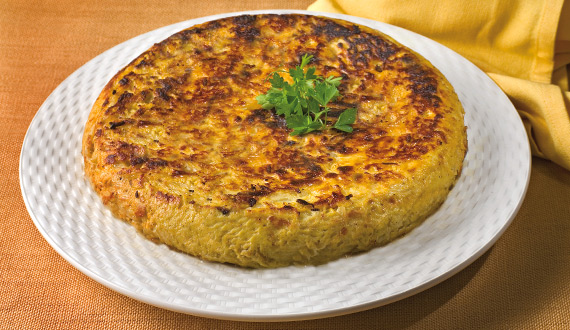

Recetas de cocina casera
Patatas

Ingredientes
Patatas 3
Aceite de girasol 1L
Sal al Gusto
Volver
Pollo al horno

Ingredientes
1 pollo de corral (de unos 1.600 g. aproximadamente)
1 limón
60 ml. aceite de oliva virgen extra
1 cucharada sopera de tomillo seco
3 dientes de ajo
Sal y pimienta negra recién molida (al gusto de cada casa)
4 patatas medianas (una por persona)
Volver
Quiche de bacón y jamón york

Ingredientes
1 lámina de pasta brisa (o pasta quebrada)
5 huevos
200 gr de queso emmental rallado
250 ml de nata líquida
200 gr de bacon
200 gr de jamon york
aceite
sal
pimienta
Volver
Tortilla de cebolla

Ingredientes
2 cebollas grandes
4 huevos medianos camperos
Sal y pimienta negra recién molida (al gusto)
Aceite de oliva virgen extra (20 ml. para pochar la cebolla y 10 ml. para dorar la tortilla)
Opciónal: Perejil o cilantro fresco
Volver